library(tidyverse)
library(pheatmap)
library(dendsort)
library(viridis)
library(RColorBrewer)
library(bouquet)
library(vegan)
library(ggvegan)
library(knitr)
knitr::opts_chunk$set(comment="", cache=T, warning = F, message = F,
fig.path = "images/", dev="svglite", dev.args=list(fix_text_size=FALSE), fig.height=8, fig.width=8)
options(digits=4, knitr.kable.NA = "") # for kables
source("read_shimadzu.R")
explained <- function(cap) paste0(round(100*summary(cap)$constr.chi/summary(cap)$tot.chi, 0), "% explained")metadata <- list.files("data/volatiles", pattern = "Ipomopsis long-term volatiles - 20", full.names=T) %>%
map_dfr(~read_tsv(.x, show_col_types = F) %>%
mutate(across(any_of(c("pump_id", "plant", "vial", "sample")), as.character)), .id="metafile") %>%
mutate(year = year(date))
# metadata %>% add_count(year, date, time, site, type, sample) %>% filter(n>1) %>%
# arrange(year, date, time, site, type, sample) %>% write_tsv("data/volatiles/metadupes.tsv", na="")Field metadata
ggplot(metadata, aes(x=yday(date), fill=paste(site, time))) +
facet_wrap(vars(year), ncol=1) + geom_bar() +
scale_fill_brewer(palette = "Paired") + theme_classic() +
labs(x="Day of year", y="Samples", fill="Site, time")
metadata %>% filter(type=="floral") %>% count(year, site, time) %>%
pivot_wider(names_from=c("site","time"), values_from="n") %>% kable(caption = "floral samples")| year | Ihyb_D | Ihyb_N | Lagg_D | Lagg_N | VF_D | VF_N |
|---|---|---|---|---|---|---|
| 2017 | 34 | 25 | 50 | 22 | 53 | 3 |
| 2018 | 8 | 10 | 15 | 17 | ||
| 2019 | 25 | 29 | 40 | 17 | ||
| 2020 | 20 | 24 | 14 | |||
| 2021 | 15 | 24 | 44 | 28 | 20 | 21 |
| 2022 | 41 | 82 | 49 | 47 | 19 | 20 |
| 2023 | 18 | 19 | 42 | 40 | 17 |
metadata %>% filter(type=="ambient") %>% count(year, site, time) %>%
pivot_wider(names_from=c("site","time"), values_from="n") %>% kable(caption = "ambient samples")| year | Ihyb_D | Ihyb_N | Lagg_D | Lagg_N | VF_D | VF_N |
|---|---|---|---|---|---|---|
| 2017 | 3 | 1 | 3 | 1 | 3 | 1 |
| 2018 | 3 | 2 | 2 | 2 | ||
| 2019 | 5 | 4 | 3 | 6 | ||
| 2020 | 3 | 3 | 2 | |||
| 2021 | 3 | 3 | 3 | 7 | 2 | 2 |
| 2022 | 10 | 6 | 3 | 5 | 4 | 4 |
| 2023 | 2 | 3 | 4 | 4 | 1 |
metadata %>% filter(type=="floral") %>% count(year, site, time, plant) %>% count(year, site, time) %>%
pivot_wider(names_from=c("site","time"), values_from="n") %>% kable(caption = "plants")| year | Ihyb_D | Ihyb_N | Lagg_D | Lagg_N | VF_D | VF_N |
|---|---|---|---|---|---|---|
| 2017 | 32 | 25 | 49 | 22 | 44 | 3 |
| 2018 | 8 | 10 | 15 | 17 | ||
| 2019 | 25 | 29 | 40 | 16 | ||
| 2020 | 20 | 24 | 13 | |||
| 2021 | 15 | 18 | 41 | 28 | 20 | 19 |
| 2022 | 26 | 31 | 48 | 46 | 19 | 20 |
| 2023 | 18 | 19 | 41 | 40 | 17 |
left_join(metadata %>% filter(type=="floral") %>% count(year, site, time, name="samples"),
metadata %>% filter(type=="floral") %>% count(year, site, time, plant) %>% count(year, site, time, name="plants")) %>%
mutate(samples_per_plant = samples/plants, .keep="unused") %>%
pivot_wider(names_from=c("site","time"), values_from="samples_per_plant") %>% kable(caption = "samples per plant")| year | Ihyb_D | Ihyb_N | Lagg_D | Lagg_N | VF_D | VF_N |
|---|---|---|---|---|---|---|
| 2017 | 1.062 | 1.000 | 1.020 | 1.000 | 1.204 | 1.000 |
| 2018 | 1.000 | 1.000 | 1.000 | 1.000 | ||
| 2019 | 1.000 | 1.000 | 1.000 | 1.062 | ||
| 2020 | 1.000 | 1.000 | 1.077 | |||
| 2021 | 1.000 | 1.333 | 1.073 | 1.000 | 1.000 | 1.105 |
| 2022 | 1.577 | 2.645 | 1.021 | 1.022 | 1.000 | 1.000 |
| 2023 | 1.000 | 1.000 | 1.024 | 1.000 | 1.000 |
Soil moisture
metadata %>% filter(type=="floral") %>% group_by(year, site, time, date) %>% summarize(has_VWC = mean(!is.na(VWC))) %>%
ggplot(aes(y=fct_rev(paste(date, site, time)), color=paste(site, time), x=has_VWC)) + geom_point(size=3) +
scale_color_brewer(palette = "Paired") + theme_minimal() +
labs(x="Fraction of floral samples with soil moisture recorded", y="Date, site, time", color="Site, time")
ggplot(metadata, aes(x=yday(date), color=paste(site, time), y=VWC)) +
facet_wrap(vars(year), ncol=1) + geom_point() +
scale_color_brewer(palette = "Paired") + theme_classic() +
labs(x="Day of year", y="Soil moisture", color="Site, time")
ggplot(metadata, aes(x=site, fill=paste(site, time), y=VWC)) +
facet_wrap(vars(year), nrow=1) + geom_boxplot(outlier.size=0.5) +
scale_fill_brewer(palette = "Paired") + theme_classic() +
labs(x="Site", y="Soil moisture", fill="Site, time")
Extraction time
ggplot(metadata, aes(x=site, fill=paste(site, time), y=bag)) +
facet_grid(time~year, scales = "free_y") + geom_boxplot(outlier.size=0.5) +
scale_fill_brewer(palette = "Paired") + theme_minimal() +
labs(x="Site", y="Bag time", fill="Site, time")ggplot(filter(metadata, type=="floral"), aes(x=time_length(equil, "minutes"), y=time_length(pumping, "minutes"), color=factor(year))) +
geom_vline(xintercept=30) + geom_hline(yintercept=15) + xlim(c(0,NA)) + ylim(c(0, NA))+ coord_fixed()+
geom_jitter(height=0.5, width=0.5)+ #seconds not recorded
scale_color_brewer(palette = "Paired") + theme_classic() +
labs(x="Equilibration time", y="Pumping time", color="Site, time")
Plant identification
#figure out which filenames are labelled with flower numbers vs. metal tags
metadata %>% filter(type=="floral") %>% mutate(plant.int=as.integer(plant)) %>%
arrange(year, site, plant.int) %>% mutate(plant.int=factor(plant.int, levels=unique(plant.int))) %>%
ggplot(aes(x=factor(year), y=plant.int, fill = as.integer(plant)<=50)) +
geom_tile() + facet_wrap(vars(site), scales="free_y") + scale_fill_brewer(palette = "Paired")+
guides(fill="none") + theme_classic() + labs(x="Year", y="Filename label") + theme(axis.text.x = element_text(angle=90))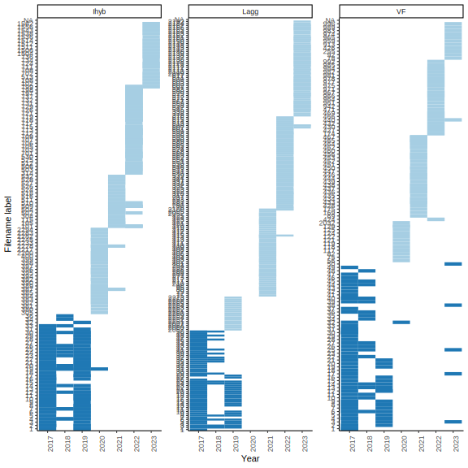
Matching field metadata and filenames
filemeta <- read_csv("data/volatiles/Ipomopsis GCMS files - ipo_meta_split.csv") %>%
filter(type != "blank", #GC blank
!verdict %in% c("skip-notrun", #tube was skipped by the autosampler
"leak-blank", #tube leaked, not desorbed but GC run anyway
"mismatch-leak", #tube leaked, tube time not aligned with file time
"skip-rename-mismatch-leak", #tube leaked after skip, tube time not aligned with file time
"filemoved" #file was moved on disk so creation time is wrong
)) %>% drop_na(type, FileName) %>% #no file match to desorb start time
distinct(FileName, .keep_all = T) %>% #some files got duplicated from fuzzy matching times
mutate(date = ymd(date), year=year(date), vial=as.character(vial))
#figured out which of these dupes has the real sample using PCA
filemeta %>% add_count(year, date, time, site, type, sample) %>% filter(n>1) %>%
arrange(year, date, time, site, type, sample) %>% write_tsv("data/volatiles/filedupes.tsv", na="")
filedupes <- read_tsv("data/volatiles/filedupes_annotated.tsv") %>% filter(!is.na(exclude)) %>% pull(FileName)
filemeta <- filemeta %>% filter(!FileName %in% filedupes)
bind_rows(files=filemeta, field=metadata, .id="source")%>%
ggplot(aes(y=paste(date, site, time), fill=source)) +
geom_bar(position=position_dodge(width=0.4)) +
scale_fill_brewer(palette = "Set2") + theme_classic() +
labs(y="Date, site, time", x="Samples", fill="Source")
full_join(count(filemeta, type, name="files"), count(metadata, type, name="field")) %>% kable()| type | files | field |
|---|---|---|
| ambient | 108 | 113 |
| floral | 929 | 952 |
| leaf | 16 | 16 |
full_join(count(filemeta, year, date, time, site, name="files"),
count(metadata, year, date, time, site, name="field")) %>% kable()| year | date | time | site | files | field |
|---|---|---|---|---|---|
| 2017 | 2017-07-10 | D | VF | 22 | 11 |
| 2017 | 2017-07-13 | D | VF | 29 | 29 |
| 2017 | 2017-07-14 | D | VF | 19 | 19 |
| 2017 | 2017-07-18 | D | Lagg | 22 | 23 |
| 2017 | 2017-07-20 | D | Lagg | 19 | 19 |
| 2017 | 2017-07-21 | D | Ihyb | 3 | 3 |
| 2017 | 2017-07-21 | D | Lagg | 14 | 14 |
| 2017 | 2017-07-24 | D | Ihyb | 30 | 31 |
| 2017 | 2017-07-27 | D | Ihyb | 6 | 6 |
| 2017 | 2017-07-31 | N | VF | 5 | 5 |
| 2017 | 2017-08-01 | N | Ihyb | 25 | 25 |
| 2017 | 2017-08-10 | N | Ihyb | 2 | 2 |
| 2017 | 2017-08-10 | N | Lagg | 24 | 24 |
| 2018 | 2018-07-18 | D | VF | 20 | 20 |
| 2018 | 2018-07-19 | D | Lagg | 18 | 18 |
| 2018 | 2018-07-19 | N | Ihyb | 13 | 13 |
| 2018 | 2018-07-20 | D | Ihyb | 8 | 8 |
| 2018 | 2018-07-26 | D | Ihyb | 4 | 4 |
| 2019 | 2019-07-23 | D | VF | 23 | 23 |
| 2019 | 2019-07-30 | D | Lagg | 43 | 43 |
| 2019 | 2019-08-02 | D | Ihyb | 29 | 30 |
| 2019 | 2019-08-12 | N | Ihyb | 32 | 33 |
| 2020 | 2020-07-15 | N | Ihyb | 20 | 27 |
| 2020 | 2020-07-17 | D | VF | 14 | 16 |
| 2020 | 2020-07-21 | D | Ihyb | 24 | 23 |
| 2021 | 2021-07-12 | N | Ihyb | 27 | 27 |
| 2021 | 2021-07-15 | D | Lagg | 46 | 47 |
| 2021 | 2021-07-20 | D | VF | 6 | 22 |
| 2021 | 2021-07-21 | D | Ihyb | 20 | 18 |
| 2021 | 2021-08-04 | N | VF | 23 | 23 |
| 2021 | 2021-08-05 | N | Lagg | 35 | 35 |
| 2022 | 2022-07-11 | N | Ihyb | 36 | 34 |
| 2022 | 2022-07-12 | D | Ihyb | 29 | 32 |
| 2022 | 2022-07-21 | D | Lagg | 51 | 52 |
| 2022 | 2022-07-21 | N | Lagg | 51 | 52 |
| 2022 | 2022-07-27 | N | Ihyb | 54 | 54 |
| 2022 | 2022-07-28 | D | Ihyb | 11 | 19 |
| 2022 | 2022-08-01 | D | VF | 21 | 23 |
| 2022 | 2022-08-02 | N | VF | 24 | 24 |
| 2023 | 2023-07-20 | D | Lagg | 49 | 46 |
| 2023 | 2023-07-20 | N | Lagg | 44 | 44 |
| 2023 | 2023-07-21 | D | VF | 17 | 18 |
| 2023 | 2023-07-27 | D | Ihyb | 20 | 20 |
| 2023 | 2023-07-27 | N | Ihyb | 21 | 22 |
#library(tidylog)
meta.full <- full_join(mutate(filemeta, files=1),
mutate(metadata, field=1), by=c("year", "date", "time", "site", "type", "sample")) %>%
mutate(files=replace_na(files, 0), field=replace_na(field, 0), match = files==1 & field==1)
meta.full %>% filter(match==F) %>% arrange(date, time, site, field, files) %>%
select(date, time, site, type, field, files, sample,
rundate, samplename, vial.x, vial.y, split_notes, notes) %>%
write_tsv("data/volatiles/matching.tsv", na="")
meta.full %>% group_by(year, date, time, site) %>%
summarize(across(c(files, field, match), mean)) %>%
mutate(files=files-match, field=field-match) %>%
pivot_longer(c(files, field, match)) %>%
mutate(name=factor(name, levels=c("files", "match", "field"))) %>%
ggplot(aes(y=paste(date, site, time), x=value, fill=name)) + geom_col() +
labs(x="",y="", fill="") + theme_minimal()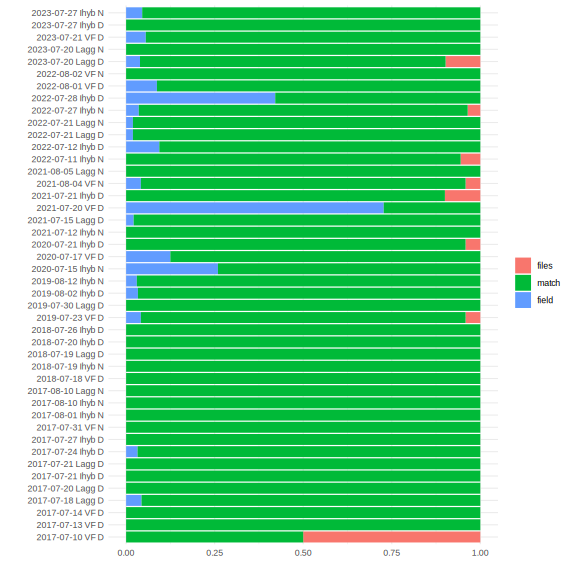
Filtering compounds
# load short names
ipochems <- read_csv("data/volatiles/Ipo volatile compounds - chemsf_ipo.csv") %>%
select(name, shortname, standard, verdict) %>% filter(verdict != "") %>%
mutate(standard = fct_recode(standard, "Methyl_salicylate"="Benzaldehyde"), # benzaldehyde regressions not reliable
class = fct_recode(standard, Aliphatics="Hexenol", Benzenoids="Methyl_salicylate", Benzenoids="Indole",
Sesquiterpenes="Caryophyllene", Monoterpenes="alpha_Pinene", Monoterpenes="Linalool")) %>%
left_join(read_csv("data/volatiles/regressions_181921_filtered_slopes.csv") %>%
pivot_wider(id_cols=standard, names_from="year", names_prefix="area_per_ng", values_from=area_per_ng))
class_pal <- set_names(c("#BC0060","#027B8C","#E56E00","#86D400"), levels(ipochems$class))
#shorten chemical names and merge compounds with multiple names
shortnames <- ipochems %>% select(name, shortname) %>% filter(shortname!="") %>% deframe()
#shortnames[shortnames %in% shortnames[duplicated(shortnames)]]
greekify <- function(names) {
names %>%
str_replace("^a-","\U03B1-") %>% str_replace("-a-","-\U03B1-") %>%
str_replace("^b-","\U03B2-") %>% str_replace("-b-","-\U03B2-") %>%
str_replace("^g-","\U03B3-") %>% str_replace("-g-","-\U03B3-")
}quant.full <- list.files("data/volatiles/quant/", full.names = T) %>%
map_dfr(read.shimadzu.quant) %>%
mutate(Name = trimws(Name), Area=replace_na(Area, 0)) %>%
distinct(Filename, Name, .keep_all=T)
need_meta <- setdiff(quant.full$Filename, meta.full$FileName)#just the ones filtered out when reading in filemeta
#only keep file-metadata matches
files.match <- intersect(meta.full$FileName, quant.full$Filename)
meta.all <- meta.full %>% filter(FileName %in% files.match)
quant.all <- quant.full %>% filter(Filename %in% files.match) %>%
select(Filename, Name, Area) %>%
mutate(Name = recode(Name, !!!shortnames)) %>%
pivot_wider(names_from = "Name", values_from="Area") %>%
arrange(match(Filename, meta.all$FileName)) %>%
write_tsv("data/volatiles/quant_all.tsv") %>%
as.data.frame() %>% column_to_rownames("Filename")filedupes <- read_tsv("data/volatiles/filedupes_annotated.tsv") %>%
mutate(fullsample = paste(year, date, time, site, type, sample), exclude=!is.na(exclude)) %>%
rename(Filename=FileName) %>% left_join(quant.full)
filedupes.wide <- filedupes %>%
select(Filename, Name, Area) %>%
mutate(Name = recode(Name, !!!shortnames)) %>%
filter(Name !="1,6,10-Dodecatrien-3-ol, 3,7,11-trimethyl-") %>%
pivot_wider(names_from = "Name", values_from="Area") %>%
as.data.frame() %>% column_to_rownames("Filename")
filedupes.meta <- filedupes %>% distinct(Filename, fullsample, .keep_all = T)
filedupes.pca.df <- fortify(rda(sqrt(filedupes.wide)))
ggplot(filter(filedupes.pca.df, score=="sites"), aes(x=PC1, y=PC2, color=factor(filedupes.meta$year))) +
geom_vline(xintercept = 0) + geom_hline(yintercept = 0)+
geom_text(data=filter(filedupes.pca.df, score=="species"), aes(label=greekify(label)), color="grey40") +
geom_path(aes(group=filedupes.meta$fullsample)) + geom_point() +
geom_text(aes(label=if_else(filedupes.meta$exclude, "", str_remove(filedupes.meta$Filename,".qgd")))) +
guides(color="none") + theme_classic()qual.full <- list.files("data/volatiles/qual/", full.names = T) %>%
map_dfr(read.shimadzu)
#only keep file-metadata matches
files.match <- intersect(meta.full$FileName, qual.full$Filename)
meta.all <- meta.full %>% filter(FileName %in% files.match)
qual.data <- qual.full %>% filter(Filename %in% files.match) %>%
filter(Name != "") %>% #drop peaks without identifications
mutate(Name = droplevels(recode(Name, !!!shortnames)))#bouquet doesn't like empty levels
qual.all <- qual.data %>% select(Filename, Name, Area) %>%
pivot_wider(names_from = "Name", values_from="Area", values_fn = sum) %>%
arrange(match(Filename, meta.all$FileName)) %>%
as.data.frame() %>% column_to_rownames("Filename")longdata <- qual.data %>% load_longdata(sample="Filename", RT="Ret.Time",
name="Name", area="Area", match = "SI", maxmatch=100)
metadata.df <- meta.all %>%
as.data.frame() %>% #tibbles break bouquet's add_count_freqs
select(-sample) %>% #name conflict with bouquet
load_metadata(date="date", sample="FileName", type="type")
rownames(metadata.df) <- metadata.df$sample
qual.all <- make_sampletable(longdata, metadata.df)
chems <- make_chemtable(longdata, metadata.df)Correlations among unfiltered compounds
meta.all.noleaf <- meta.all %>% filter(type != "leaf")
cut_threshold <- 1e9
qual.all.cut <- qual.all[meta.all.noleaf$FileName, colSums(qual.all) > cut_threshold | #big compounds
colnames(qual.all) %in% colnames(quant.all)] #or in unfiltered quant list
contams <- c("Nonanoic acid", "Decanal", "Caprolactam")
inquant <- data.frame(inquant=if_else(colnames(qual.all.cut) %in% setdiff(colnames(quant.all), contams),"Y","N"),
row.names=colnames(qual.all.cut))
pheatmap(cor(sqrt(qual.all.cut)), scale="none",
clustering_method = "mcquitty", cutree_rows = 20,
clustering_distance_rows="correlation", clustering_distance_cols="correlation",
clustering_callback = function(hc, ...){dendsort(hc, type="average")},
annotation_col = inquant, annotation_row = inquant,
color=colorRampPalette(c("blue","white","red"))(200), breaks=seq(-1,1,by=0.01),
labels_row=greekify(colnames(qual.all.cut)), show_colnames = F)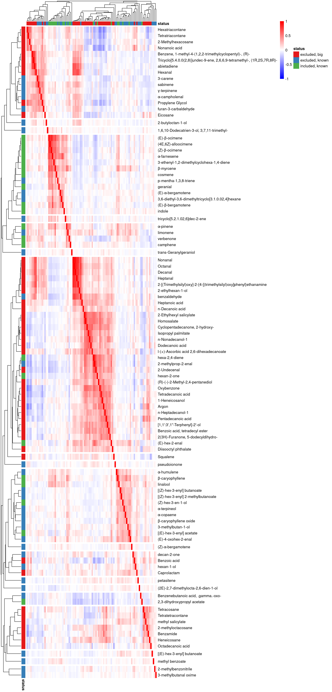
Check ambients vs. samples
cap.ambi <- capscale(sqrt(qual.all.cut) ~ type, data=meta.all.noleaf)
anova(cap.ambi)Permutation test for capscale under reduced model
Permutation: free
Number of permutations: 999
Model: capscale(formula = sqrt(qual.all.cut) ~ type, data = meta.all.noleaf)
Df Variance F Pr(>F)
Model 1 4.20e+05 3.88 0.001 ***
Residual 1035 1.12e+08
---
Signif. codes: 0 '***' 0.001 '**' 0.01 '*' 0.05 '.' 0.1 ' ' 1explained(cap.ambi)[1] "0% explained"cap.ambi.df <- fortify(cap.ambi) %>%
left_join(mutate(meta.all.noleaf, score="sites"), by=c(label="FileName", "score")) %>%
left_join(rownames_to_column(inquant, "label"))
zoom <- 40
cap_threshold <- 3
ggplot(filter(cap.ambi.df, score=="sites"), aes(x=CAP1, y=MDS1, label=greekify(label))) +
theme_classic() + theme(legend.position = "top") +
geom_point(aes(color=type, shape=type)) + scale_shape_manual(values=c(19,1))+
scale_color_manual(values=c("darkblue","magenta")) +
geom_text(data=filter(cap.ambi.df, score=="species", abs(CAP1)>cap_threshold), aes(x=CAP1*zoom))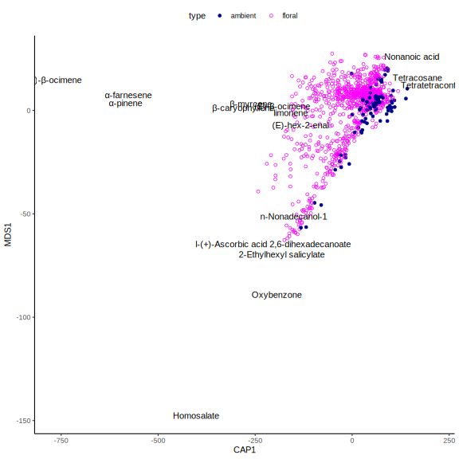
#filter(cap.ambi.df, score=="species", label%in%colnames(quant.all)) %>% arrange(CAP1) %>% View()
ggplot(filter(cap.ambi.df, score=="species"), aes(x=CAP1, y=MDS1, color=inquant)) +
labs(color= "In quant integrations?")+
theme_classic() + theme(legend.position = "top") +
geom_vline(xintercept=0)+ geom_hline(yintercept=0)+
geom_smooth() + geom_point() 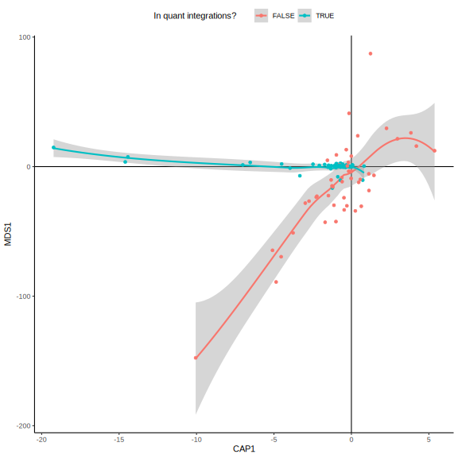
compounds.cap.angles <- cap.ambi.df %>% filter(score=="species") %>%
mutate(angle = atan2((CAP1*zoom), MDS1)*180/pi)
ggplot(compounds.cap.angles, aes(x=angle, fill=inquant)) + facet_wrap(vars(inquant), ncol=1) +
geom_histogram(binwidth=5) + scale_x_continuous(breaks=seq(-180, 180, by=30))+
labs(fill= "In quant integrations?")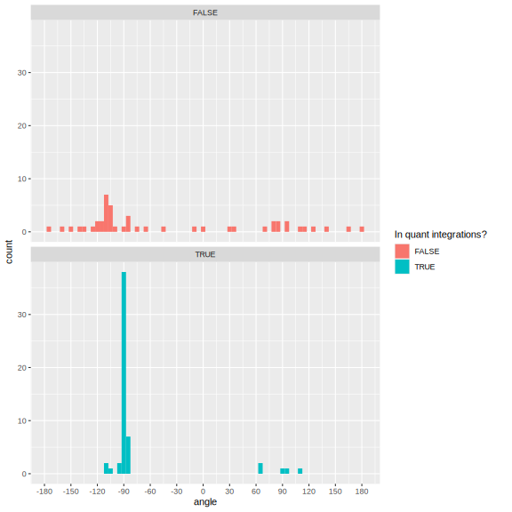
# cap.candidates <- compounds.cap.angles %>%
# filter(abs(angle+90)<5, inquant=="N") %>% select(name=label, CAP1, angle) %>% arrange(CAP1)Filtering criteria
chemsf <- chems %>%
filter_RT(2, 17) %>%
filter_match(0.8) %>%
filter_freq(0.1) %>%
filter_contaminant(cont.list = c("Caprolactam")) %>%
filter_area(min_maximum = 1e5) %>%
filter_ambient_ratio(qual.all, metadata.df, ratio = 4) %>%
combine_filters()
chemsf$filter_final <- with(chemsf, filter_freq.floral=="OK" &
filter_ambient_ratio=="OK") #only use these for final filtering
bouquet::plot_filters(chemsf, option="rarity", yrange=3.5)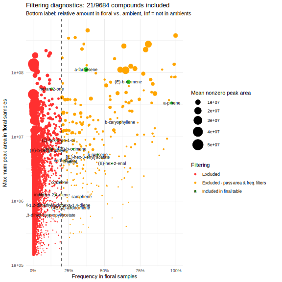
bouquet::plot_filters(chemsf, option="ambient", yrange=3.5)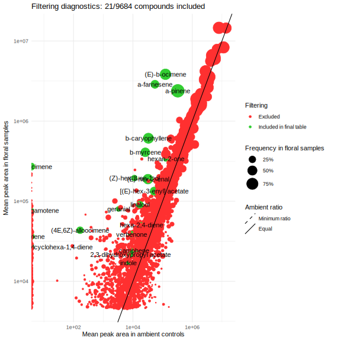
bouquet::plot_filters(chemsf, option="prop")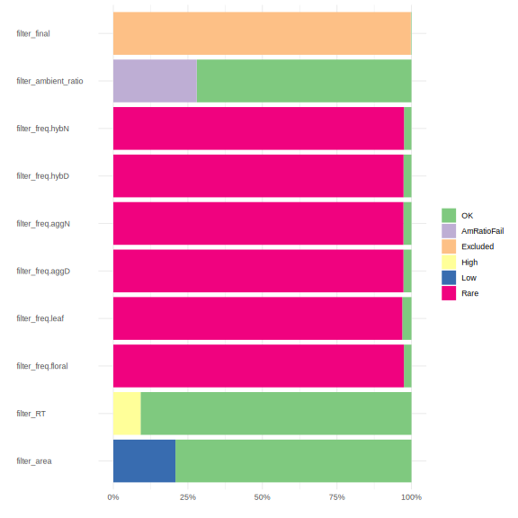
Compare quant and filtered compounds
qual_chems <- chemsf$name[chemsf$filter_final]
print("New compounds for investigation, not yet in quant integrations:")[1] "New compounds for investigation, not yet in quant integrations:"(qual_only <- setdiff(qual_chems, names(quant.all))) [1] "(3E,5E)-2,6-dimethylocta-3,5,7-trien-2-ol"
[2] "hex-2-enal"
[3] "5-Methyloxazolidine"
[4] "7-epi-trans-sesquisabinene hydrate"
[5] "8-Hexadecenal, 14-methyl-, (Z)-"
[6] "methyl 2-methylbutanoate"
[7] "carveol"
[8] "[(Z)-hex-3-enyl] 2-methylpropanoate"
[9] "Decane, 3,6-dimethyl-"
[10] "Formic acid, undecyl ester" #chemsf %>% filter(filter_final) %>% mutate(check = name %in% qual_only, .before=1) %>% View()
print("Compounds integrated for other Ipomopsis projects that did not pass filters:")[1] "Compounds integrated for other Ipomopsis projects that did not pass filters:"(quant_only <- setdiff(names(quant.all), qual_chems)) [1] "3-methylbutanal oxime"
[2] "g-terpinene"
[3] "methyl benzoate"
[4] "(3E)-4,8-dimethylnona-1,3,7-triene"
[5] "2-methylbenzonitrile"
[6] "a-campholenal"
[7] "Decanal"
[8] "Caprolactam"
[9] "Nonanoic acid"
[10] "indole"
[11] "(E)-a-bergamotene"
[12] "pseudoionone"
[13] "trans-Geranylgeraniol"
[14] "[(E)-hex-3-enyl] acetate"
[15] "[(E)-hex-3-enyl] butanoate"
[16] "(Z)-a-bergamotene"
[17] "a-humulene"
[18] "(2E)-2,7-dimethylocta-2,6-dien-1-ol"
[19] "benzaldehyde"
[20] "limonene"
[21] "methyl salicylate"
[22] "1,6,10-Dodecatrien-3-ol, 3,7,11-trimethyl-"
[23] "(E)-4-oxohex-2-enal"
[24] "p-mentha-1,3,8-triene"
[25] "tricyclo[5.2.1.02,6]dec-2-ene"
[26] "3,6-diethyl-3,6-dimethyltricyclo[3.1.0.02,4]hexane"
[27] "furan-3-carbaldehyde"
[28] "sabinene"
[29] "3-carene"
[30] "b-caryophyllene oxide"
[31] "[(Z)-hex-3-enyl] 2-methylbutanoate"
[32] "2-butyloctan-1-ol"
[33] "hexan-1-ol"
[34] "3-methylbutan-1-ol"
[35] "decan-2-one"
[36] "1,2,3-Propanetriol, 1-acetate"
[37] "Benzamide"
[38] "Benzenebutanoic acid, .gamma.-oxo-" #chemsf %>% filter(filter_final) %>% mutate(check = name %in% iponew, .before=1) %>% View()
print("Compounds that passed filters and already have quant integrations:")[1] "Compounds that passed filters and already have quant integrations:"(quant_qual <- intersect(names(quant.all), qual_chems)) [1] "(E)-hex-2-enal"
[2] "a-pinene"
[3] "b-myrcene"
[4] "(Z)-b-ocimene"
[5] "(E)-b-ocimene"
[6] "linalool"
[7] "a-copaene"
[8] "petasitene"
[9] "b-caryophyllene"
[10] "(E)-b-bergamotene"
[11] "a-farnesene"
[12] "(Z)-hex-3-en-1-ol"
[13] "[(Z)-hex-3-enyl] butanoate"
[14] "a-terpineol"
[15] "cosmene"
[16] "(4E,6Z)-alloocimene"
[17] "verbenone"
[18] "3-ethenyl-1,2-dimethylcyclohexa-1,4-diene"
[19] "geranial" toolow <- rownames(quant.all)[rowSums(quant.all[,quant_qual]) < 2500] #exclude 2 samples with very low integrations
qual <- prune_sampletable(qual.all, chemsf, metadata.df)[, quant_qual]
qual <- qual[!rownames(qual) %in% toolow,]
quant <- quant.all[rownames(qual), quant_qual]
quant.long <- quant %>% rownames_to_column("sample") %>% pivot_longer(colnames(quant))
ipochemsf <- ipochems[match(colnames(qual), ipochems$shortname),]
meta <- metadata.df[rownames(qual),] %>%
mutate(across(c(year, site, time), factor))
quant %>% rownames_to_column("FileName") %>% write_tsv("data/volatiles/filtered_quant.tsv")
meta %>% write_tsv("data/volatiles/filtered_meta.tsv")
save(quant, meta, file = "data/volatiles/filtered_quantmeta.rda")Retention time of qual and quant integrations
quant.RT <- quant.full %>% summarize(RT = median(Ret.Time, na.rm=T), .by=Name) %>%
mutate(name = recode(Name, !!!shortnames)) %>% filter(name %in% qual_chems)
ggplot(longdata %>% filter(name %in% qual_chems), aes(x=RT, y=fct_reorder(name, RT))) +
geom_jitter(aes(color=factor(name, levels=sample(levels(name)))), width = 0, height=0.5, size=0.5) +
geom_point(data=quant.RT) +
guides(color="none") + ylab("") + theme_minimal()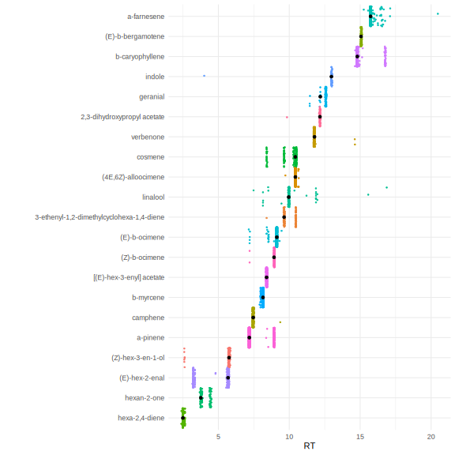
New compounds to keep, some with multiple RTs:
- 5-Methyloxazolidine
- methyl 2-methylbutanoate
- Decane, 3,6-dimethyl (3 RT)
- (3E,5E)-2,6-dimethylocta-3,5,7-trien-2-ol
- Formic acid, undecyl ester (3 RT)
- 8-Hexadecenal, 14 methyl- (Z) (4+ RT)
- 7-epi-trans-sesquisabinene hydrate (4+ RT)
New compounds that already line up with quant integrations:
- hex-2-enal = (E)-hex-2-enal
- carveol = cosmene
- [(Z)-hex-3-enyl] 2-methylpropanoate = [(Z)-hex-3-enyl] butananoate
Compounds with extra RTs to investigate:
- [(Z)-hex-3-enyl] butanoate (2 RT)
- hex-2-enal (2 RT)
- geranial (2 RT)
- cosmene (3 RT)
- a-terpineol (2 RT)
- b-caryophyllene (2 RT)
Descriptions of filtered volatiles
Sample size
load("data/volatiles/filtered_quantmeta.rda")
meta %>% count(year, site, time) %>%
pivot_wider(names_from=c("site","time"), values_from="n") %>% kable(caption = "floral samples")| year | Ihyb_D | Ihyb_N | Lagg_D | Lagg_N | VF_D | VF_N |
|---|---|---|---|---|---|---|
| 2017 | 33 | 25 | 49 | 22 | 63 | 3 |
| 2018 | 8 | 10 | 15 | 17 | ||
| 2019 | 24 | 28 | 40 | 17 | ||
| 2020 | 21 | 18 | 12 | |||
| 2021 | 17 | 24 | 44 | 28 | 6 | 21 |
| 2022 | 32 | 82 | 48 | 46 | 18 | 20 |
| 2023 | 18 | 18 | 45 | 40 | 16 |
meta %>% count(year, site, time, plant) %>% count(year, site, time) %>%
pivot_wider(names_from=c("site","time"), values_from="n") %>% kable(caption = "plants")| year | Ihyb_D | Ihyb_N | Lagg_D | Lagg_N | VF_D | VF_N |
|---|---|---|---|---|---|---|
| 2017 | 31 | 25 | 49 | 22 | 45 | 3 |
| 2018 | 5 | 6 | 15 | 17 | ||
| 2019 | 24 | 28 | 40 | 16 | ||
| 2020 | 21 | 18 | 11 | |||
| 2021 | 16 | 18 | 41 | 28 | 6 | 20 |
| 2022 | 22 | 32 | 47 | 45 | 18 | 20 |
| 2023 | 18 | 18 | 41 | 40 | 16 |
#average samples by plant
meta.quant.plant <- bind_cols(meta, quant) %>% drop_na(plant) %>%
group_by(year, site, time, plant) %>% summarize(across(where(is.numeric), ~mean(.x, na.rm=T))) %>% ungroup() %>%
mutate(ystp = paste0(year, site, time, plant))
meta.plant <- meta.quant.plant %>% select(ystp, year, site, time, plant, VWC)
quant.plant <- meta.quant.plant %>% select(all_of(colnames(quant)), ystp) %>% column_to_rownames("ystp")
quant.long.plant <- quant.plant %>% rownames_to_column("ystp") %>% pivot_longer(colnames(quant))Correlations
corr.annot <- ipochemsf %>% select(shortname, Class=class) %>% column_to_rownames("shortname")
corr.vols <- cor(quant, method="pearson")
pheatmap(corr.vols,
scale="none", clustering_method = "mcquitty",
color=colorRampPalette(c("blue","white","red"))(200), breaks=seq(-1,1,by=0.01),
annotation_col=corr.annot, annotation_row=corr.annot,
annotation_colors = list(Class=class_pal),
labels_row=greekify(rownames(corr.vols)), labels_col=greekify(colnames(corr.vols)))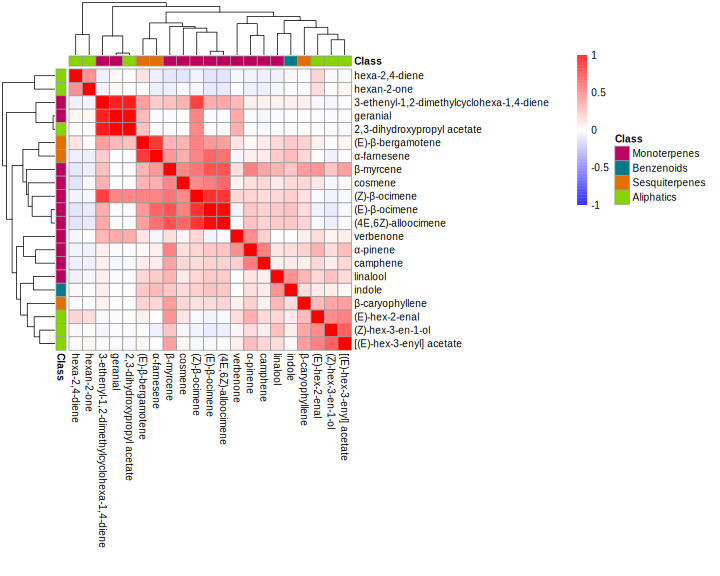
Heatmap
pal <- with(meta, list(
year = set_names(brewer.pal(nlevels(year), "Set2"), levels(year)),
site = set_names(brewer.pal(nlevels(site), "Set1"), levels(site)),
time = set_names(c("lightblue","plum1"), levels(time))))
times <- c(D="day", N="night")
dots <- c(D=1, N=19)
pheatmap(as.matrix(t(quant))^(1/4),
cluster_cols=T, show_colnames=F,
clustering_method="mcquitty", clustering_distance_rows="correlation",
clustering_callback = function(hc, ...){dendsort(hc, type="average")},
annotation_col = meta %>% select(year, site, time) %>% mutate(across(everything(), factor)),
annotation_colors =pal,
scale="none", color=mako(512),main="Filtered quant volatiles")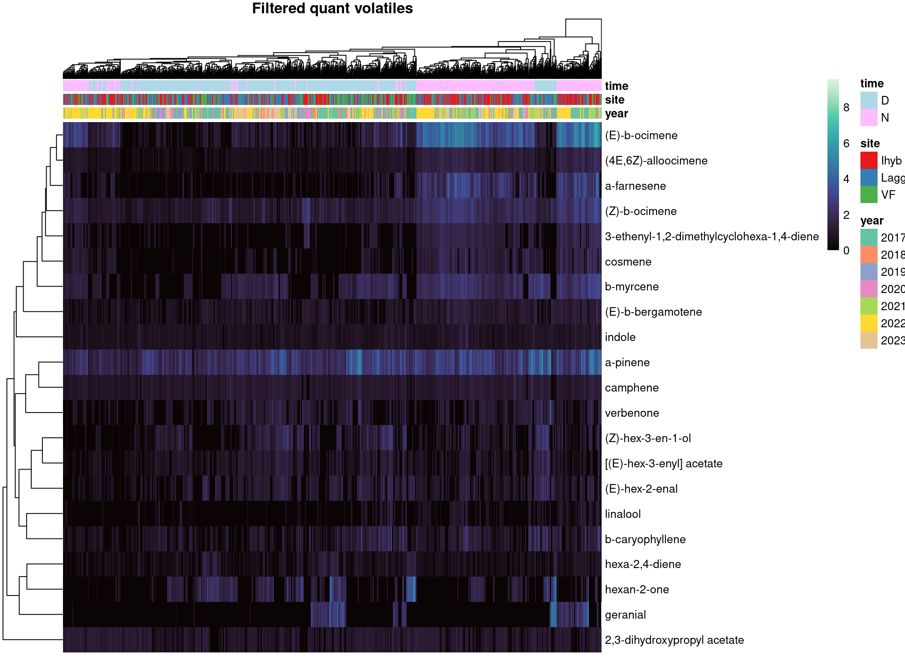
Boxplots
quant.long %>% left_join(meta) %>% mutate(name=fct_reorder(greekify(name), -value)) %>%
ggplot(aes(x=year, y=value, fill=time, color=site)) + facet_wrap(vars(name), scales="free_y") +
geom_boxplot(outlier.size= 0.1) + scale_y_sqrt() +
scale_color_manual("Site", values=pal$site) + scale_fill_manual("Time", values=c(D="white",N="black")) +
theme_bw() + theme(axis.title=element_blank(), legend.position = "top")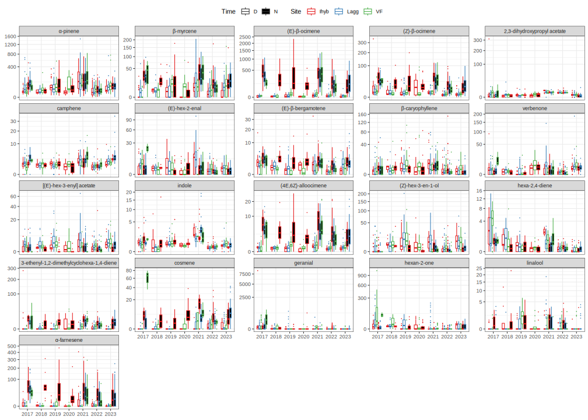
NMDS
nmds <- metaMDS(decostand(quant, "hellinger"), autotransform = F, trymax=1, trace=F)
nmds.df <- fortify(nmds) %>% left_join(mutate(meta, score="sites"), by=c(label="sample", "score"))
nmds.plot <- ggplot(filter(nmds.df, score=="sites"), aes(x=NMDS1, y=NMDS2, label=greekify(label))) +
theme_classic() + theme(legend.position = "top")
nmds.plot + geom_point(aes(color=time)) +
geom_text(data=filter(nmds.df, score=="species")) +
scale_color_manual("Time", values=pal$time, label=times)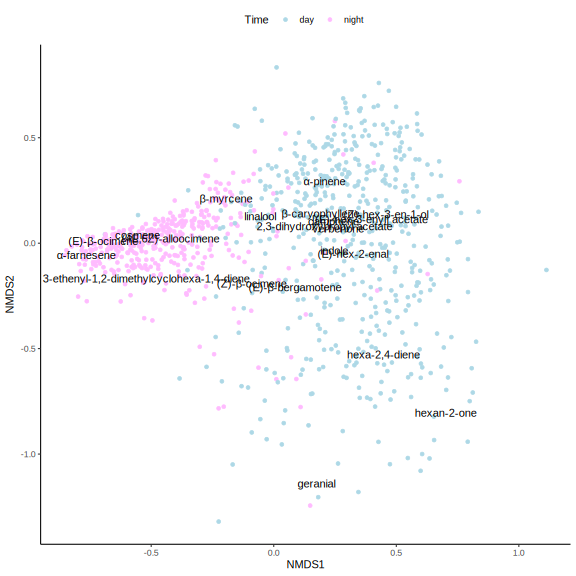
nmds.plot + geom_point(aes(color=site, shape=time)) +
scale_color_manual("Site", values=pal$site) +
scale_shape_manual("Time", values=dots, label=times)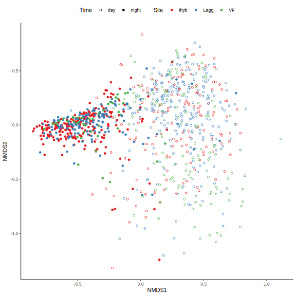
nmds.plot + geom_point(aes(color=year, shape=time)) +
geom_text(data=filter(nmds.df, score=="species")) +
scale_color_manual("Year", values=pal$year) +
scale_shape_manual("Time", values=dots, label=times)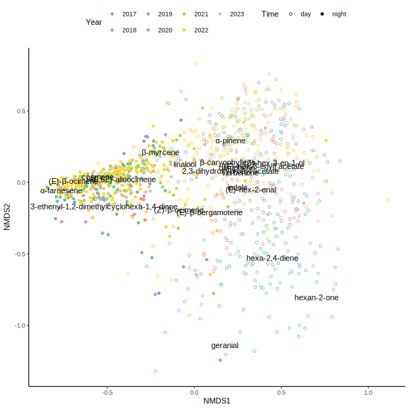
Test group differences
CAP with time
cap.t <- capscale(sqrt(quant) ~ time, data=meta)
explained(cap.t)[1] "33% explained"cap.t.df <- fortify(cap.t) %>% left_join(mutate(meta, score="sites"), by=c(label="sample", "score"))
ggplot(filter(cap.t.df, score=="sites"), aes(x=CAP1, y=MDS1, label=greekify(label))) +
theme_classic() + theme(legend.position = "top") +
geom_vline(xintercept = 0)+
geom_point(aes(color=year, shape=time)) +
geom_text(data=filter(cap.t.df, score=="species"), color="grey40") +
geom_text(data=filter(cap.t.df, score=="centroids")) +
scale_color_manual("Year", values=pal$year) +
scale_shape_manual("Time", values=dots, label=times)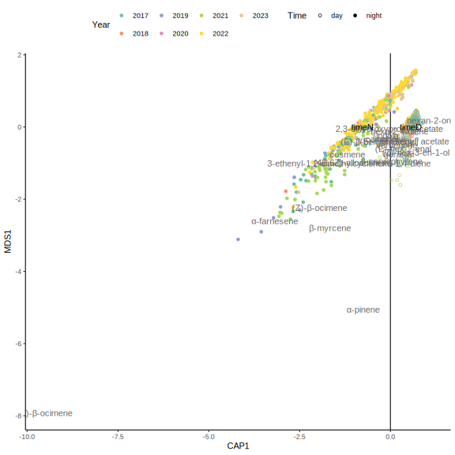
ggplot(filter(cap.t.df, score=="sites"), aes(y=-CAP1, x=pump, color=year)) +
geom_point(shape=1) + geom_smooth(aes(group=paste(time, year)), se=F, span=1.4) +
scale_color_manual(values=pal$year) + theme_minimal() +
scale_x_time(breaks=as.POSIXct(seq(0,24, by=2)*60*60), labels=hour) +
labs(x="Hour of sampling", y="CAP separating day and night", color="Year")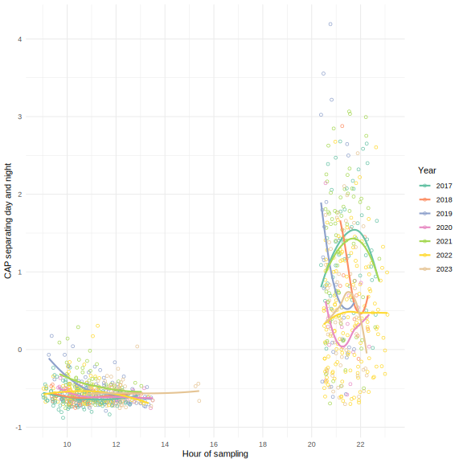
CAP with time, year, site
#use data averaged by plant
cap.tys <- capscale(sqrt(quant.plant) ~ time + year + site + time:year + time:site + year:site, data=meta.plant)
anova(cap.tys, by="term")Permutation test for capscale under reduced model
Terms added sequentially (first to last)
Permutation: free
Number of permutations: 999
Model: capscale(formula = sqrt(quant.plant) ~ time + year + site + time:year + time:site + year:site, data = meta.plant)
Df Variance F Pr(>F)
time 1 371197 488.32 0.001 ***
year 6 84106 18.44 0.001 ***
site 2 10030 6.60 0.001 ***
time:year 6 35794 7.85 0.001 ***
time:site 2 4664 3.07 0.018 *
year:site 11 14003 1.67 0.025 *
Residual 784 595952
---
Signif. codes: 0 '***' 0.001 '**' 0.01 '*' 0.05 '.' 0.1 ' ' 1explained(cap.tys)[1] "47% explained"cap.tys.df <- fortify(cap.tys) %>% left_join(mutate(meta.plant, score="sites"), by=c(label="ystp", "score"))
ggplot(filter(cap.tys.df, score=="sites"), aes(x=CAP1, y=CAP2, label=greekify(label))) +
theme_classic() + theme(legend.position = "top") +
geom_point(aes(color=year, shape=time)) +
geom_text(data=filter(cap.tys.df, score=="species"), color="grey40") +
geom_text(data=filter(cap.tys.df, score=="centroids")) +
scale_color_manual("Year", values=pal$year) +
scale_shape_manual("Time", values=dots, label=times)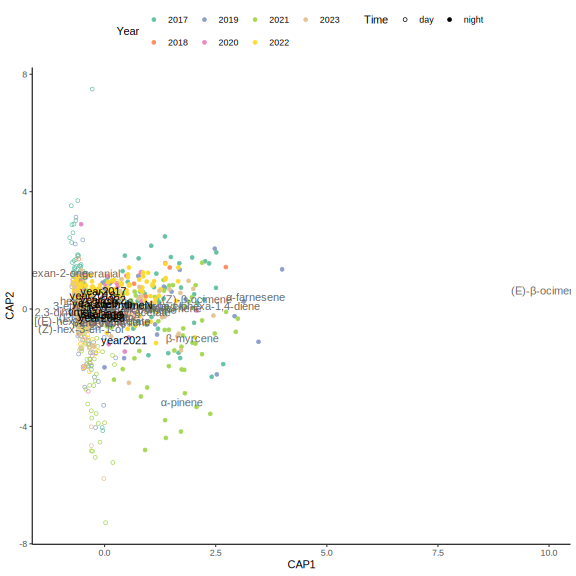
CAP with time, year, site, soil moisture
meta.withvwc <- meta %>% drop_na(VWC) %>%
group_by(date, site, time) %>% #see plot above for which dates have soil moisture data
mutate(relVWC = VWC - mean(VWC)) %>% ungroup() #VWC centered to mean for each sampling date
quant.withvwc <- quant[meta.withvwc$sample,]
cap.tysv <- capscale(sqrt(quant.withvwc) ~ time + year + site + time:year + time:site + relVWC, data=meta.withvwc)
anova(cap.tysv, by="term")Permutation test for capscale under reduced model
Terms added sequentially (first to last)
Permutation: free
Number of permutations: 999
Model: capscale(formula = sqrt(quant.withvwc) ~ time + year + site + time:year + time:site + relVWC, data = meta.withvwc)
Df Variance F Pr(>F)
time 1 292554 273.77 0.001 ***
year 5 99779 18.67 0.001 ***
site 2 12653 5.92 0.001 ***
relVWC 1 2735 2.56 0.057 .
time:year 4 21340 4.99 0.001 ***
time:site 2 6045 2.83 0.021 *
Residual 552 589867
---
Signif. codes: 0 '***' 0.001 '**' 0.01 '*' 0.05 '.' 0.1 ' ' 1explained(cap.tysv)[1] "42% explained"CAP with year, within time
meta.D <- filter(meta, time=="D")
quant.D <- quant[rownames(meta.D),]
meta.N <- filter(meta, time=="N")
quant.N <- quant[rownames(meta.N),]
cap.year.D.df <- capscale(sqrt(quant.D) ~ year, data=meta.D) %>%
fortify() %>% left_join(mutate(meta, score="sites"), by=c(label="sample", "score"))
ggplot(filter(cap.year.D.df, score=="sites"), aes(x=CAP1, y=CAP2, label=greekify(label))) +
theme_classic() + theme(legend.position = "top") +
geom_point(aes(color=year, shape=time)) +
geom_text(data=filter(cap.year.D.df, score=="species"), color="grey40") +
geom_text(data=filter(cap.year.D.df, score=="centroids")) +
scale_color_manual("Year", values=pal$year) +
scale_shape_manual("Time", values=dots, label=times)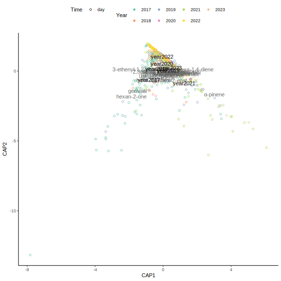
cap.year.N.df <- capscale(sqrt(quant.N) ~ year, data=meta.N) %>%
fortify() %>% left_join(mutate(meta, score="sites"), by=c(label="sample", "score"))
ggplot(filter(cap.year.N.df, score=="sites"), aes(x=CAP1, y=CAP2, label=greekify(label))) +
theme_classic() + theme(legend.position = "top") +
geom_point(aes(color=year, shape=time)) +
geom_text(data=filter(cap.year.N.df, score=="species"), color="grey40") +
geom_text(data=filter(cap.year.N.df, score=="centroids")) +
scale_color_manual("Year", values=pal$year) +
scale_shape_manual("Time", values=dots, label=times)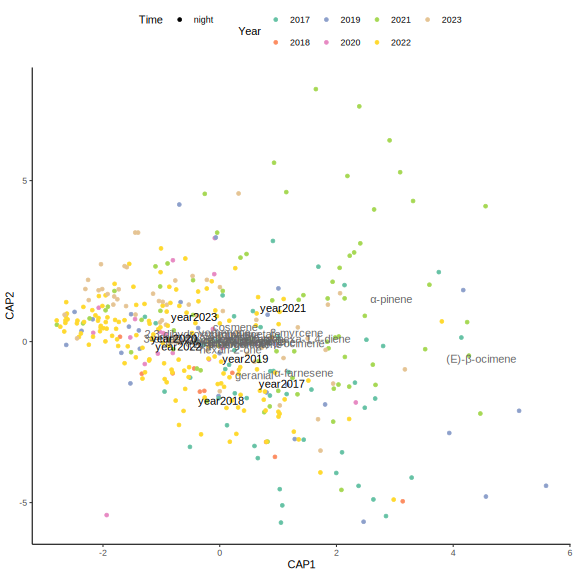